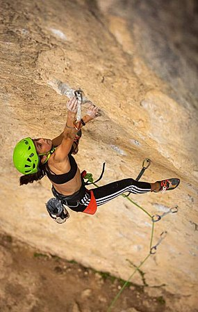

Lead climbing (or leading) is a technique in rock climbing where the lead climber clips their rope to the climbing protection as they ascend the climbing route, while their second (or belayer) remains at the base of the route belaying the rope to protect the lead climber in the event that they fall. The term is used to distinguish between the two roles, and the greater effort and increased risk, of the role of the lead climber.
Leading a climb is considered to be the opposite of top roping a climb, where even though there is still a second belaying the rope, the lead climber faces little or no risk in the event of a fall and does not need to clip into any protection as the rope is already anchored to the top of the route (i.e. if they fall off, they just hang from the rope).